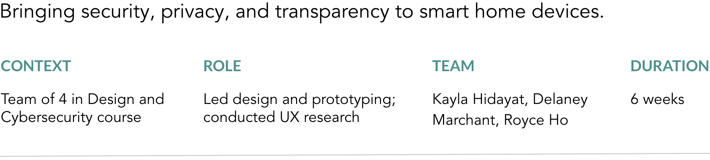

Privacy & Security Label

Smart home devices range from smart thermostats and speakers to voice-enabled assistants such as the Amazon Echo and Google Home. Unfortunately, the majority of these devices don't have privacy and security by design.
Problem: Smart home devices often have poor security, yet users don't look into their device's vulnerabilties.
Goal: Bring transparency, privacy, and security to the smart home device experience.
Solution: An accessible privacy & security label (with a linked webpage) for smart home device packaging.
INTERVIEWING STAKEHOLDERS
There exists a lack of urgency for strong security & privacy measures from users and device makers.
Our interviews with stakeholders illustrated a lack of urgency for strong security and privacy measures from users, who often undervalue their data. This lack of urgency also exists in device makers, as they are not being held accountable for their poor security standards.
We used affinity diagramming to extract common themes from our interviews.
Smart home device users were instead focused on convenience and accessibility. In order to get users to care about cybersecurity, we reframed our project to solve the following question:
How might we make security and privacy accessible to smart home device consumers?
BRAINSTORMING SOLUTIONS
After exploring 3 solutions, we chose to pursue the privacy & security label for its accessibility.
Converged to 3 solutions after brainstorming & clustering themes
The redesign option could make the device less convenient and usable as we replace features. Meanwhile, the hireable red teams option was dependent on the financial capabilities of smart home device companies and users, which reduces its accessibility.
We chose to pursue the privacy & security label, as it provides the most accessibility to consumers, while also making security more essential for the device makers.
PROTOTYPING AND TESTING
Based on user testing insights, we iterated on our label design and added a linked webpage.
To make the label's content relevant, I researched aspects of privacy and security that should concern users.
We created the initial prototypes after making the following design choices:
- We used a table layout to keep the information organized and easy-to-read. In terms of design, we were inspired by the Nutrition Facts label on food boxes today.
- We added a QR code that links to a webpage explaining concepts from the label that might be unknown to the average consumer. We each came up with wireframes.
- We included face icons to conveniently illustrate level of caution to users with less knowledge of security. We made sure to choose accessible color shades.

User Testing
We each showed our prototypes to smart home device users. I incorporated their feedback to make the following design changes:
- I expanded the face icons to every row on the label, instead of just the security section. Users found the emojis extremely useful, so I made sure to utilize it throughout the sticker.
- I altered the label design to make the label smaller. Once we had the physical label prototype in our hands, we realized that it was too big for smaller device boxes.
- I made the webpage more user-friendly, as drop down menus and large chunks of text were not accessible to users. I designed the layout to be similar to a phone's Settings page, so that it feels familiar to users.
DESIGNING THE FINAL PROTOTYPE
Based on user testing insights, we iterated on our label design and added a linked webpage.

Through the insights gained from usability testing of our designs, I created our final prototype.
I kept the webpage clean and monochromatic to match the label. You can interact with our webpage prototype, view our Behance page, & enjoy our YouTube video showing the label in use!
RESULTS & REFLECTIONS
I hope to see this kind of label implemented one day - this topic has been making headlines lately!
There are several questions that we would need to address in order to bring this label to market.
For development, would this be a sticker or a label printed on packaging?
For implementation, could this be a future US government policy or a third-party initiative?
Success of this label could be measured by how widely adopted the label is, and by observing changes in sales for smart home companies with poor security vs those with stronger security.
Takeaways
- When the team has conflicting ideas about a feature, it's best to test out the different ideas and see which one the users respond to the most.
- It helps to discuss the strengths, interests, and skillsets of each team member before working together on a team project.
- It's very important to keep security and privacy in mind while designing products.